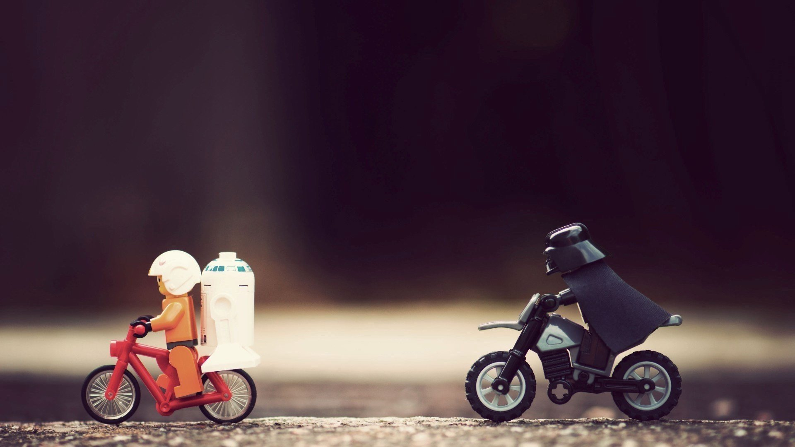

自我介绍
我现在是一名供职成都奥震电子有限公司的ruby on rails程序员， 期间也负责服务器环境搭建维护工作。 以前也从事过笔记本芯片级维修，售后维护，售前工程师等工作。 我从事程序员工作快两年了， 主要靠公司培训和自学获取编码能力， 我要感谢我现在供职的公司，给我学习代码及相关工作的机会,我现在主要技术关注点
- 1.ruby on rails
- 2.web前端技术
- 3.phoneGap
- 4.linux运维
- 5.项目管理
其余我也喜欢摄影和驴友，爱游泳，喜欢Rock，jazz风格音乐